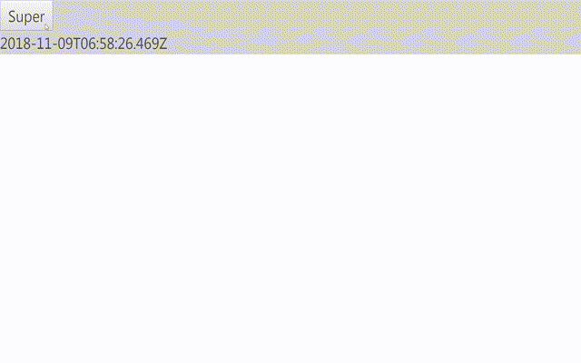
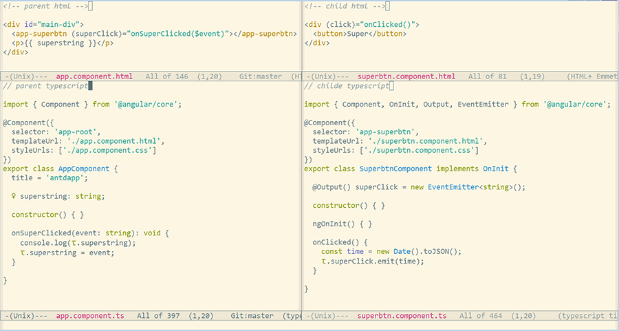

Angular 组件之间传值
Table of Contents
1 @Input 和 @Output
Output 和 Input 是两个装饰器，是 Angular 专门用来实现跨组件通讯，双向绑定等操作 所用的。
1.1 @Input 父组件向子组件传值
Input 的数据流方向通常是父组件的值传递给子组件，这里子组件中通过 @Input 修饰变量。
import { Component, OnInit, Input } from '@angular/core'; // ... @Component({ selector: 'app-child' // ... }) export class ChildComponent implements OnInit { @Input() filename = 'worksheet-%s.xlsx'; // ... }
父组件的模板中就可以通过变量绑定来想子组件传值。
<app-child [filename]="passing-filename.txt"> </app-child>
1.2 @Output 子组件向父组件传值
Output 的数据流方向与 Input 是相反的，所以那就是 child 控制 parent 的数据显示， input 是 parent 控制 child 的数据显示。如下一个例子中实现一个 SuperbtnComponent， 用于将当前的时间字符串传值给父组件，效果如下图：

传递的方式如下：
- 在子组件 SuperbtnComponent 中定义 superClick 的 EventEmitter 对象，并将传 递值的类型设置成 string
- 当子组件按钮被按下时通过事件绑定调用 onClicked() ，onClicked() 方法中通过 emit() 方法将当前时间字符串传递给父组件
- 父组件在模板中将 superClick 绑定到 onSuperClicked() 方法，通过特定的变量 $event 来将子组件的字符串值传入父组件中
- 父组件在 APPComponent 类中就可以得知子组件所传过来的值
- 在父组件的 onSuperClicked(event: string) 方法中就可以改变 superstring 的值

代码如下：
<!-- parent html --> <div id="main-div"> <app-superbtn (superClick)="onSuperClicked($event)"></app-superbtn> <p>{{ superstring }}</p> </div>
// parent typescript import { Component } from '@angular/core'; @Component({ selector: 'app-root', templateUrl: './app.component.html', styleUrls: ['./app.component.css'] }) export class AppComponent { title = 'antdapp'; private superstring: string; constructor() { } onSuperClicked(event: string): void { console.log(this.superstring); this.superstring = event; } }
<!-- child html --> <div (click)="onClicked()"> <button>Super</button> </div>
// childe typescript import { Component, OnInit, Output, EventEmitter } from '@angular/core'; @Component({ selector: 'app-superbtn', templateUrl: './superbtn.component.html', styleUrls: ['./superbtn.component.css'] }) export class SuperbtnComponent implements OnInit { @Output() superClick = new EventEmitter<string>(); constructor() { } ngOnInit() { } onClicked() { const time = new Date().toJSON(); this.superClick.emit(time); } }